Jakarta, Indonesia · Staff Process Engineer
PROCESS ENGINEERING · DATA · AUTOMATION
Improving manufacturing through process, data & practical systems.
I help production teams improve visibility, standardization, and performance through process engineering, analytics, and internal digital tools.
Current RoleStaff Process Engineer
EngineeringProcess & Standardization
DigitalAnalytics & Automation
01 / WHO I AM
Shop-floor experience with an engineering and digital mindset.
My background across quality control, technical troubleshooting, and process engineering helps me connect operational problems with practical solutions.
PROFILE
From production operations to process improvement.
I started on the production floor, developed technical and quality experience, and moved into Process Engineering in July 2025. Today, I work on process analysis, standardization, production trials, KPI monitoring, and manufacturing digitalization.
AT A GLANCE
Current RoleStaff Process Engineer
IndustryComputer Manufacturing
StrengthOperations + Digital Systems
ApproachMeasure. Improve. Standardize.
02 / WHAT I DELIVER
Engineering work that supports daily operations.
Focused on clear data, stable processes, and tools that are practical for production teams.
Process Improvement
Cycle-time analysis, line balancing, root-cause analysis, trials, and follow-up actions.
Production Analytics
KPI, output, efficiency, productivity, downtime, loss time, and performance monitoring.
Digital Systems
Internal applications for reporting, traceability, quality, maintenance, inventory, and workflow control.
Standardization
Work instructions, process flow, visual standards, revision control, and operational documentation.
03 / FEATURED PROJECTS
Selected systems built for real operational needs.
A focused selection showing how I combine manufacturing knowledge, data, and software.
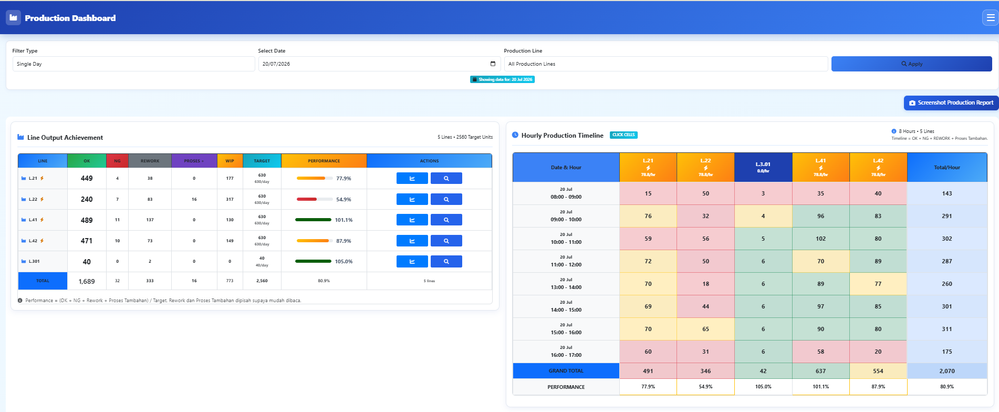
Production & Leader Dashboard
One operational view for targets, hourly output, WIP, rework, loss time, and line performance.
Faster line-status review
Consistent KPI visibility
Cross-functional monitoring
PHPMySQLJavaScriptData Visualization
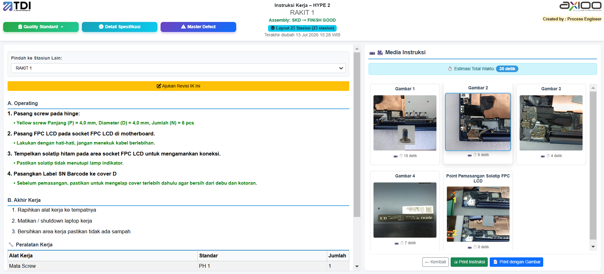
StandardizationDigital Work Instruction
Structured work steps, visuals, standards, tools, cycle time, and revision control.
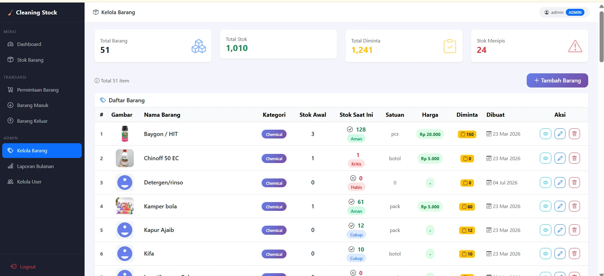
Inventory ControlCleaning Stock Management
Stock, requests, incoming and outgoing goods, alerts, reporting, and access control.
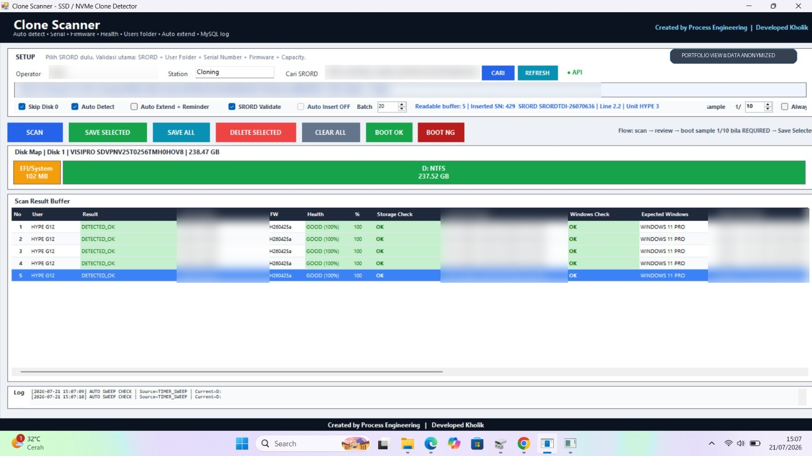
Production AutomationClone Scanner
Automatic validation for storage, serial number, firmware, health, capacity, and Windows build.
MORE WORKExplore additional manufacturing systems 7 PROJECT VIEWS ＋
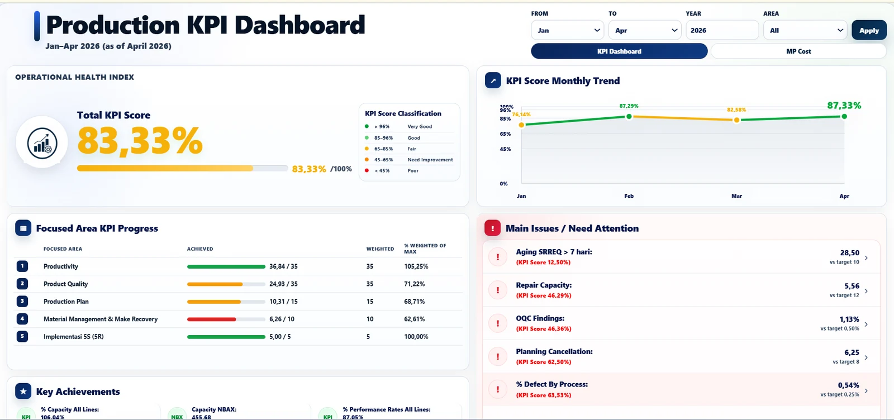
PerformanceProduction KPI Dashboard
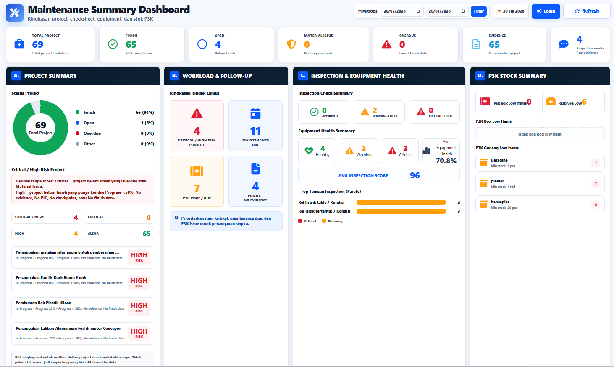
MaintenanceMaintenance Summary
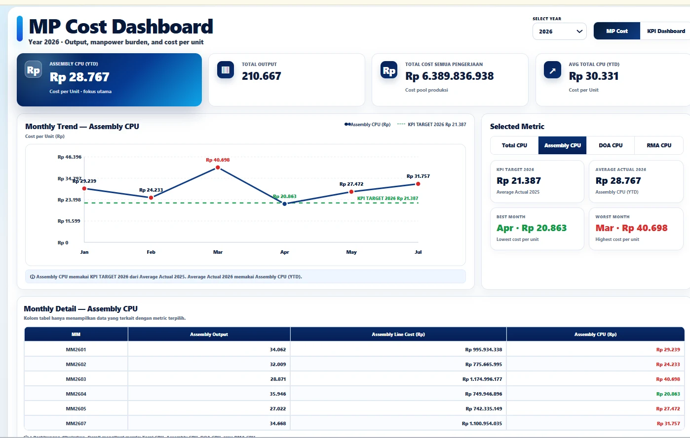
Cost AnalyticsManpower Cost Dashboard
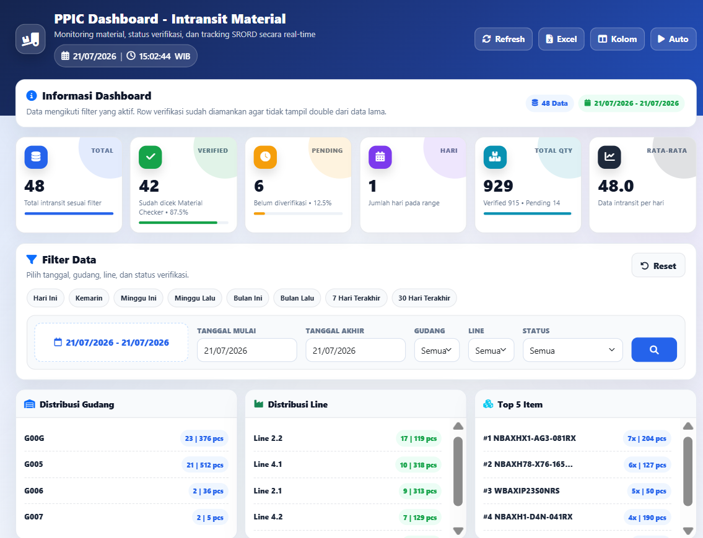
PPICPPIC In-transit Material
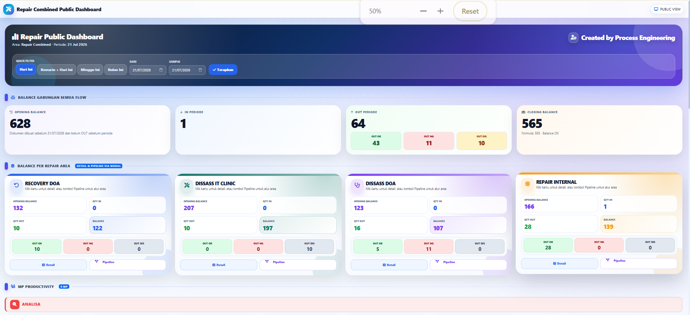
Repair FlowRepair Flow Dashboard
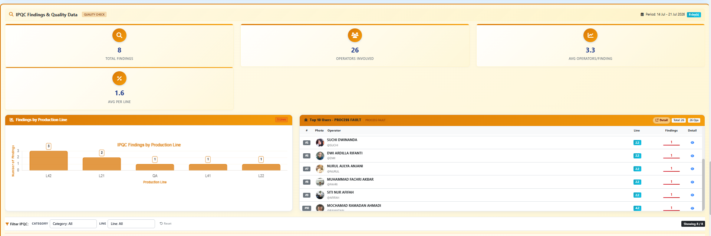
IPQCIPQC Findings Dashboard
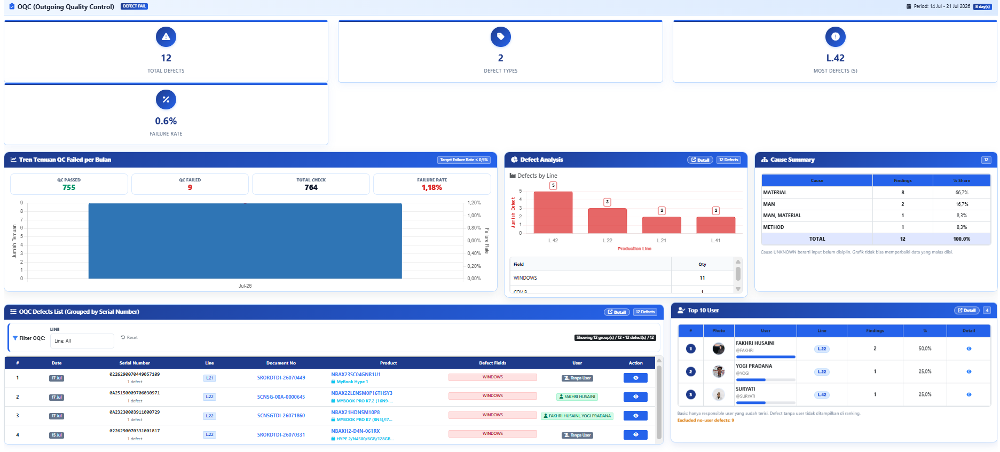
OQCOQC Quality Dashboard
04 / CAREER JOURNEY
Experience built from the production floor upward.
Each role added a stronger understanding of product quality, technical problems, and manufacturing processes.
Jul 2025 — Present
PT Tera Data Indonusa · AxiooCURRENT
Staff Process Engineer
Process analysis, line balancing, trials, work instructions, problem-solving, KPI monitoring, and internal system development.
Process ImprovementDigitalizationKPI
Apr 2024 — Jul 2025
PT Tera Data Indonusa · Axioo
Production Operator — Quality Control
Product inspection, function validation, standard compliance, and abnormality reporting.
Quality ControlProduct Validation
Dec 2023 — Apr 2024
PT Tera Data Indonusa · Axioo
Technician
Troubleshooting, failure analysis, repair, and post-repair verification.
TroubleshootingRepair Analysis
Apr 2022 — Dec 2023
PT Tera Data Indonusa · Axioo
Production Operator — Quality Control
Built a foundation in production discipline, quality awareness, output targets, and line collaboration.
ProductionQualityTeamwork
Current Studies
Universitas Pamulang
Informatics Engineering
Software development, databases, mobile applications, artificial intelligence, IoT, and data-driven systems.
SoftwareDatabaseAI & IoT
05 / TOOLS & EXPERTISE
Manufacturing knowledge supported by data and software.
Technology is a supporting tool—the objective is always a clearer, faster, and more controlled process.
01
Process Engineering
02
Data & Performance
03
Software Development
04
Manufacturing Digitalization
06 / LET'S CONNECT
Let’s improve manufacturing through better processes and systems.
Open to professional collaboration and opportunities in Process Engineering, manufacturing analytics, and digitalization.